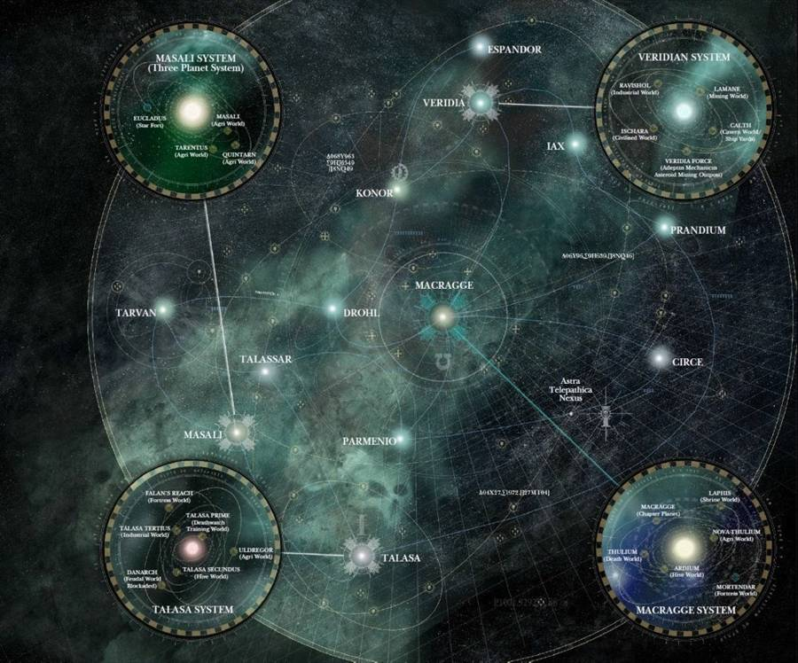

Ultramar
| Ultramar | |
|---|---|
| The Realm of Ultramar | |
Star chart of the Realms of Ultramar, centred on Macragge, with the Masali, Veridian, Talasa and Macragge systems Artwork © Games Workshop | |
| Type | Stellar realm under the Ultramarines |
| Segmentum | Segmentum Ultima, Eastern Fringe |
| Classification | Sub-sector realm; Chapter domain of the Ultramarines |
| Capital | Macragge |
| Ruler | Roboute Guilliman, Lord of Ultramar; Marneus Calgar, Chapter Master and Lord Macragge; four Tetrarchs |
| Population | Many billions (unrecorded in Imperial returns) |
| Founded | Late M30, under Guilliman |
| Principal worlds | Macragge, Calth, Espandor, Iax, Konor, Masali, Parmenio, Prandium, Quintarn, Talassar, Tarentus, Talasa Prime |
| Military | Ultramarines and Successor Chapters; Ultramar Auxilia; planetary defence forces |
Ultramar, also called the Realm of Ultramar, is a stellar realm in the Eastern Fringe of the Segmentum Ultima, ruled by the Ultramarines from their homeworld of Macragge. It was created by the primarch Roboute Guilliman during the Great Crusade, when it was a domain of some five hundred worlds, and is now a smaller realm of a few dozen inhabited systems. Its worlds are renowned in the Imperium for order, prosperity and civic learning, and Imperial publicists call it the Jewel of the Imperium.[1][2]
Ultramar was the target of the Shadow Crusade in the Horus Heresy, was the capital of the short-lived Imperium Secundus, and was reduced in size by the Second Founding. In the 41st millennium it repelled Hive Fleet Behemoth and several Chaos invasions. In the Era Indomitus it was the main theatre of the Plague Wars, and since the return of Guilliman it has been restored and has become one of the strongholds of the Imperium Sanctus.[3][4]
History
[edit]
Foundation
[edit]Ultramar began as the alliance of worlds around Macragge that Guilliman built before the Emperor arrived. Its first members were neighbouring systems that came under Macragge's influence through trade, treaties and the suppression of piracy. When Guilliman took command of the XIII Legion, the realm grew rapidly: the Ultramarines' expeditions brought world after world into compliance and, rather than moving on, Guilliman bound many of them into a common state, sharing laws, coinage and defence. By the end of the Great Crusade, Ultramar was a domain of some five hundred worlds, the largest single realm of the Imperium under a primarch.[5][2]

Guilliman governed Ultramar as a model for the Imperium. Each world kept its own institutions but sent tithes and soldiers to the realm, and the realm's armies, the Ultramar Auxilia, fought beside the Legion. The realm was administered from Macragge by the primarch's officials, and some worlds were raised as recruiting grounds, shipyards or arsenals for the Legion.[2]
The Horus Heresy
[edit]The Heresy came to Ultramar in 005.M31, when the Word Bearers attacked the Ultramarines assembled at Calth. The Battle of Calth began the Shadow Crusade, in which the Word Bearers and World Eaters devastated many worlds of the realm, among them Calth itself, whose star was poisoned and whose people retreated underground. The realm was then cut off by the warp storm called the Ruinstorm.[3]
In the belief that Terra might have fallen, Guilliman made Ultramar the core of Imperium Secundus, a provisional successor state, and proclaimed the primarch Sanguinius as its emperor. The state lasted only until news reached Macragge that the Emperor lived, after which Guilliman dissolved it. The episode was afterwards counted against him by his critics, and many records of it were sealed.[3][5]
The Second Founding
[edit]After the Heresy, the Ultramarines were the largest surviving Legion, and the realm of Ultramar the largest surviving realm under a primarch. Guilliman's Codex Astartes required the Legions to be divided into Chapters, and he applied the rule to his own Legion first. The Ultramarines were split into the Ultramarines Chapter and more than twenty Successor Chapters, and most of the Five Hundred Worlds were given to them or returned to the ordinary government of the Imperium. Ultramar was reduced to Macragge and the systems around it.[6][7]
From M31 to M41
[edit]For ten thousand years after Guilliman was struck down, Ultramar was governed by the Chapter Masters of the Ultramarines and remained one of the most stable regions of the Imperium. In 745.M41 it was attacked by Hive Fleet Behemoth, which consumed Prandium and was destroyed at the Battle of Macragge. Later in the millennium it was raided by Orks from Charadon, attacked by the Iron Warriors, and invaded by the daemon prince M'kar the Reborn. Marneus Calgar strengthened the realm's armies and fortifications during his long tenure.[2]
The Era Indomitus
[edit]
Guilliman was restored to life on Macragge in 999.M41 and left for Terra. Soon afterwards the Great Rift and the Noctis Aeterna cut Ultramar off. The forces of Nurgle under the daemon primarch Mortarion launched the Plague Wars against it, attacking Iax, Parmenio, Espandor and other worlds. Ultramarines and Successor Chapters fought to hold them, reinforced by Fleet Avenger and the first Primaris Space Marines.[4]
After more than a century, Guilliman broke off the main body of the Indomitus Crusade and returned to save his realm. His campaign, called the Spear of Espandor, recovered most of the ground lost, and the war ended in a final confrontation on Iax, where the Death Guard escaped under cover of a virus bomb. Mortarion withdrew, and Guilliman began the restoration of Ultramar.[4]
The restoration of Ultramar has gone hand in hand with the reforms of the Imperium Sanctus. The Ultramar Auxilia were rebuilt, the realm's fleets enlarged, and its four Tetrarchs, the primarch's deputies for the realm, reappointed. Many of the new Primaris Chapters of the Ultima Founding were raised from Ultramarines gene-seed, and several have been stationed to guard the realm's approaches.[4][8]
Geography
[edit]Ultramar lies on the Eastern Fringe, the edge of the galaxy toward the regions later claimed by the T'au Empire and the source of many Tyranid incursions. Its principal worlds include:[2]
| World | Type | Notes |
|---|---|---|
| Macragge | Chapter world | Capital; homeworld of the Ultramarines |
| Calth | Cavern world; shipyards | Devastated in 005.M31; populated underground since |
| Espandor | Cardinal world | Base of the Spear of Espandor in the Plague Wars |
| Iax | Garden world | Main battlefield of the Plague Wars |
| Konor | Research world | Adeptus Mechanicus research station |
| Masali | Agri world | Part of a three-planet system |
| Parmenio | Training world | Recruiting ground of the Ultramarines |
| Prandium | Formerly garden world | Consumed by Hive Fleet Behemoth, 745.M41 |
| Quintarn | Agri world | |
| Talassar | Ocean world | |
| Tarentus | Agri world | |
| Talasa Prime | Training world | Deathwatch training world |
The realm also includes Circe, a gas giant whose orbit was the scene of the final destruction of Hive Fleet Behemoth, and the Astra Telepathica Nexus that links the realm to the rest of the Imperium.[2]
Government
[edit]Ultramar is governed by the Lord of Ultramar, a title held by Guilliman and, in his absence, by the Chapter Master of the Ultramarines. Beneath the lord are four Tetrarchs, each responsible for a quarter of the realm, and the civil governments of the individual worlds. Each world keeps its own institutions, many of them modelled on the consular government of ancient Macragge. The Ultramarines are both the realm's protectors and its ruling order, and their captains and veterans often hold civil offices on its worlds.[2][6]
Society
[edit]
The people of Ultramar are educated, prosperous and civic-minded by the standards of the Imperium. Each citizen is trained to bear arms and serves in the defence forces, and the realm can raise very large armies in a short time. Schools, libraries and public buildings are maintained on every world, and Ultramar's public life gives a place to debate, law and the arts. Pilgrims came to Macragge in large numbers to see Guilliman's body before his revival, and many still visit the realm's shrines.[2][9]
Ultramarian architecture is classical, with columns, domes and marble halls, and the Ultramarines' iconography of the omega and the colours blue and gold is used across the realm. The realm's culture places the primarch at its centre, and the Ultramarines' own teachings of order, duty and practical wisdom are widely studied among its people.[2]
Timeline
[edit]| Date | Event |
|---|---|
| Age of Strife | The industries of Macragge survive the collapse of order, and its people keep an authoritarian but cohesive society.[a] |
| 837.M30 | The Emperor rediscovers Roboute Guilliman and sets him to bring the Ultramar worlds into the Imperium. |
| Late M30 | The Ultramarines campaign for two standard centuries to bind the Five Hundred Worlds of Ultramar into compliance.[b] |
| 007.M31 | The Battle of Calth and the start of the Shadow Crusade against Ultramar. |
| 121.M31 | Guilliman is mortally wounded at Thessala, and the Tetrarchy of Ultramar is disbanded in his absence. |
| M31–M41 | Ultramar is attacked again and again, and the worlds of the region are defended under the Tetrarchy's successors.[c] |
| 000–012.M42 | The Plague Wars strike Ultramar from within and without; Mortarion's invasion is broken. |
| 745.M41 | Hive Fleet Behemoth attacks Macragge, and the Battle of Macragge follows. |
| 999.M41 | The Invasion of Ultramar by the Iron Warriors is defeated, and the Ultramar Campaign of the Thirteenth Black Crusade follows. |
| 999.M41 | Guilliman is resurrected, and he declares Ultramar an autonomous realm under his rule as Lord Macragge. |
| 999.M41 | Guilliman leaves for Terra on the Terran Crusade; the Great Rift opens and the Indomitus Crusade begins. |
| c. 012.M42 | Guilliman returns to Ultramar at the end of the first phase of the Indomitus Crusade, and he ends the Plague Wars.[d] |
| Early M42 | Ultramar is governed by Guilliman's reformed Imperial administration and its Chapters remain on guard. |
See also
[edit]Notes
[edit]References
[edit]- ^ Haley, Guy. Dark Imperium (Second Edition) (novel). Black Library, Chs. 3, 10, 17, 20. Abnett, Dan. Know No Fear (novel). Black Library, pp. 24-24, 65-66.
- ^ a b c d e f g h i McNeill, Graham. The Chapter's Due (novel). Black Library. Warhammer 40,000: Rulebook (8th Edition), pp. 154-159, 167. Games Workshop.
- ^ a b c Abnett, Dan. Unremembered Empire (novel). Black Library. Kyme, Nick. Deathfire (novel). Black Library.
- ^ a b c d McNeill, Graham. Defenders of Ultramar (Graphic Novel). Black Library. Codex: Space Marines (7th Edition) (Digital Edition), pg. 21. Games Workshop.
- ^ a b Gathering Storm - Part Three - Rise of the Primarch (7th Edition), pp. 4-47. Games Workshop. Eye of Vengeance (Audio).
- ^ a b Codex: Space Marines (5th Edition), pp. 12-15. Games Workshop. Warhammer 40,000: Rulebook (5th Edition), pg. 117. Games Workshop.
- ^ Codex: Ultramarines (2nd Edition), pp. 11-15. Games Workshop. Bligh, Alan. The Horus Heresy - Book Five: Tempest (Forge World Series). Black Library, pp. 10-11, 15-17, 75-79, 145.
- ^ White Dwarf 306 (UK), "Chapter Approved: Deathwatch Kill-Teams," by Graham McNeill, pg. 30. Haley, Guy. The Laurel of Defiance (Short Story). Black Library.
- ^ Chapter Approved (2003), "Using Deathwatch Kill Teams in Warhammer 40,000," pg. 75. The Citadel Journal 41, pg. 29.